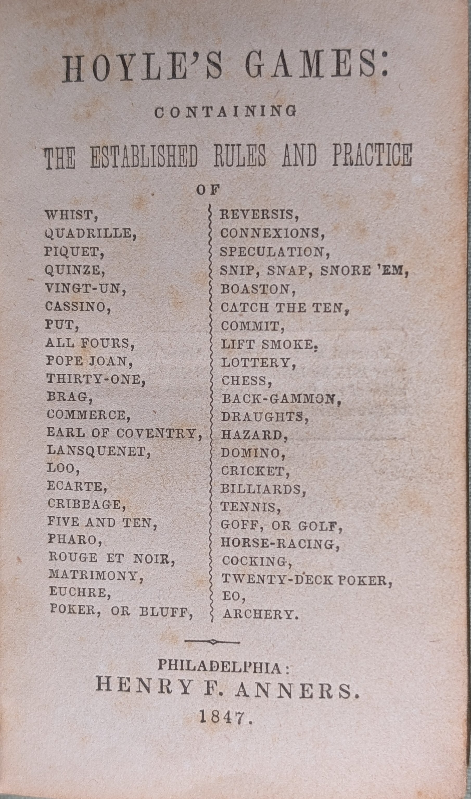

A Descriptive Bibliography of Edmond Hoyle
Copyright © 2014-26 by David Levy
(page updated 2026-05-25)User Guide
Anners.Games.1845
Hoyle's Games, Henry F. Anners, second edition, 1845.
 |
Title: | HOYLE’S GAMES: | CONTAINING | THE ESTABLISHED RULES AND PRACTICE | OF | [twenty-three lines to left of curly rule] | WHIST, | QUADRILLE, | PIQUET, | QUINZE, | VINGT-UN, | CASSINO, | PUT, | ALL FOURS, | POPE JOAN, | THIRTY-ONE, | BRAG, | COMMERCE, | EARL OF COVENTRY, | LANSQUENET, | LOO, | ECARTE, | CRIBBAGE, | FIVE AND TEN, | PHARO, | ROUGE ET NOIR, | MATRIMONY, | EUCHRE, | POKER, OR BLUFF, | [twenty-three lines to right of curly rule] | REVERSIS, | CONNEXIONS, | SPECULATION, | SNIP, SNAP, SNORE’EM, | BOASTON, | CATCH THE TEN, | COMMIT, | LIFT SMOKE, | LOTTERY, | CHESS, | BACK-GAMMON, | DRAUGHTS, | HAZARD, | DOMINO, | CRICKET, | BILLIARDS, | TENNIS, | GOFF, OR GOLF, | HORSE-RACING, | AND | COCKING | TWENTY-DECK POKER, | EO, | ARCHERY. | [short rule] | PHILADELPHIA: | HENRY F. ANNERS. | 1845. |
| Collation: | 24o: π4 A–D8 [E]8 F–Q8 R8(−R8 missing, blank?) [$1 signed]; 139 leaves, pp. [i–viii], [1] 2–269 [270] |
| Contents: | Signature (Page) Reference | Contents | Signature (Page) Reference | Running Titles |
| π1r (i) | title | |||
| π1v (ii) | ‘[rule] | Entered, according to the Act of Congress, in the | year 1845, by HENRY F. ANNERS, in the clerk’s | office of the District Court for the Eastern District | of Pennsylvania. | [rule] | (2)’ | |||
| π2r (iii) | ‘ADVERTISEMENT. | [...] | E. T. | Edin. 1st April 1838.’ | |||
| π2v (iv) | ‘ADVERTISEMENT TO THE AMERICAN | EDITION. | [...]’ | |||
| π3r–π4v (v–viii) | ‘CONTENTS. | [...]’ | π3v–π4v (vi–viii) | ‘CONTENTS.’ | |
| A1r–H4r (1–119) | see Hardie.US.1 | A1v–H4r (2–119) | see Hardie.US.1 | |
| H4v–Q8v (120–256) | see Anners.Games.1844 | H5r–Q8v (121–256) | see Anners.Games.1844 | |
| R1r–R2v (257–260) | ‘SUPPLEMENT TO HOYLE | [short curly rule] } EUCHRE, | [...]’ | R1v–R2r (258–259) | ‘EUCHRE.’ | |
| R2v–R4r (260–263) | ‘[...] | POKER, OR “BLUFF,” | [...]’ | R2v–R3v (260–262) | ‘POKER, OR BLUFF.’ | |
| R4r (263) | ‘[...] | TWENTY-DECK POKER, | [...]’ | |||
| R4r–R4v (263–264) | ‘[...] | E O. | [...]’ | R4r (263) | ‘E O.’ | |
| R4v–R7r (264–269) | ‘[...] | ARCHERY. | [...]’ | R4v–R7r (264–269) | ‘ARCHERY.’ | |
| R7v (270) | blank |
| Plates: | on G6r(107) woodblock: a tapis or cloth covering the Rouge et Noir table on L7v(174) woodblock: a Backgammon board on M7r(189) woodblock: a Draughts board |
| Publisher: | Henry F. Anners |
| References: | Horr 685, Jessel 846, Rather 155 (recording impression of 1847) |
| Copies Seen: | Levy [1671] |
| Other Copies: | MH [SG 3118.45.3] |
| Notes: | Pages 1 to 119 are printed from stereotype plates first used to print Hardie.US.1. Pages 120 to 256 are printed from stereotype plates first used to print Anners.Games.1844. Pages 257 to 269 are newly printed material.There are many reimpressions of this book. Anners published an impression dated 1847 (pictured here) and many impressios without a date on the title page. Brown, Bazin & Co. published an undated version. Some impressions are 278 pages, adding material on bowls and blind hookey. These are treated as Anners.Games.1848. |